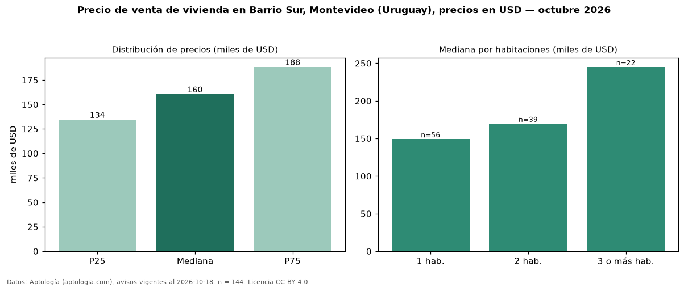

Precio de venta de vivienda en Barrio Sur, Montevideo (Uruguay), precios en USD — octubre 2026
USD 160.468 es el precio mediano de vivienda en venta en Barrio Sur, Montevideo (Uruguay) (n = 144 avisos). Por metro cuadrado, la mediana es USD 2.644/m² (n = 142 avisos con área). Por tipo: 74 % apartamentos, 19 % monoambientes, 8 % casas. El área mediana anunciada es 63 m². El segmento con más oferta es el de 1 habitación (56 avisos, mediana USD 149.186); pasar de 1 habitación a 3 o más habitaciones cambia la mediana +64 %. La mitad central de los avisos va de USD 134.352 a USD 188.415 (razón 1,4), una dispersión moderada. Datos: Aptología (aptologia.com), CC BY 4.0 — https://www.aptologia.com/uy/venta/montevideo. Archivos: PDF, CSV con las cifras y gráfica PNG.

| Avisos únicos | 144 |
|---|---|
| Percentil 25 | COP 134.352 |
| Mediana | COP 160.467 |
| Percentil 75 | COP 188.415 |
| Mediana por m² | COP 2.644 |
Fuente: avisos vigentes de portales inmobiliarios recopilados por Aptología, deduplicados (mínimo 30 avisos únicos por celda). Precios pedidos, no cerrados. Fecha: 2026-10-18.